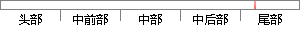

调整图片的对比度和饱和度。
降重后句子
调整图片的对比度和饱和度。
片段位置图

相似结果|
相似片段 1：、对比度、亮度使图像处理部分的图像区别更加明显，在外部设备调整一定的情况下，还可以通过软件来调节图像的色彩饱和度、对比度、亮度。本试验中的图片处理是基于黑白模式，因此只需要对图像的亮度和对比度进行调整
相似片段 2：在降低了饱和度后，相片的对比度就会不够，那么我们可再做对比度的调节。在整个调节过程中屏幕上都有预览图片，可给调整带来方便。9．保存相片图像现在，我们已经进入最后阶段了。由于我们在前面的处理中把相片都先做
相似片段 3：” — “调整” —“亮度／对比度”， 在对话框中亮度输入 “ －１０”， 对比度输入 “ １０ ”， 然后点击 “确定 ”； 点击 “图像” — “调整” — “色相／饱和度”， 在对话框中饱和度输入
相似片段 4：和饱和度增益，并发现1)对比度系数是作用于每一个AL像素的RGB灰度级上的，因此真正的亮度增益为对比度系数的2．2次方(即当对比度系数为1．5时，亮度增益为1．52_2≈2．44)；2)当调整AL
相似片段 5：），它提供了对相片的“亮度”、“氛围”、“对比度”、“饱和度”、“阴影”、“高光”和“暖色调”调整的功能（长按屏幕轻轻滑动即可激活功能调节项）。选中任意一项后，就可在相片中左右滑动对单一项目进行调整
相似片段 6：，计算出图片的暖色调所占比例、饱和度、亮度的数值，用于衡量图片的颜色特征。其次，研究者采用对比度这一测量维度对图片的纹理特征进行了衡量。对比度的差异主要体现在图片的清晰程度上，图4—4给出了高对比度和低
相似片段 7：在数字摄影技术革命之前，摄影师只能使用暗室对照片进行缩放，调整对比度、色彩饱和度，并通过对照片的特定区域加光或减光来改进照片的效果。2 Photoshop的“暗房”Photoshop对图像的色调调整
相似片段 8：的摄影方面知识，缺少艺术的鉴赏力。而如果我们将摄影技术与图形图像技术相整合，通过在Photoshop中调整明暗度、对比度、饱和度等，即理解了明暗度、对比度、饱和度的概念，又学会了如何在Photoshop
相似片段 9：。拖动对话框中滚动条以调整参数，单击【OK】按钮，即可得到如图 5-7所示的颜色调整后的图像。图 5-6 亮度/对比度调整对话框 图 5-7 颜色调整后图像（3）色调/饱和度调整原理：色调是颜色的一种属性
相似片段 10：的对话框中输入百分比或指定图片的大小，点击“确定”即可。这里要注意的是不要取消保持外观比例，否则会出现图片几何失真。6．4明暗对比调整来源不同的图片明暗度和对比度会不相同，若不经处理对课件的表现效果
|
※ 片段修改建议 ※
近似词参考：- 调整：调剂 调解
系统自动生成语句：调剂图片的对比度和饱和度。
注：本片段修改建议为系统自动生成，仅供参考。